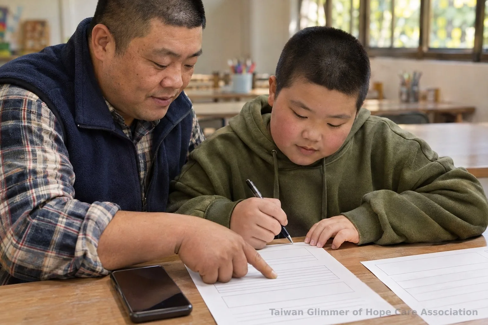
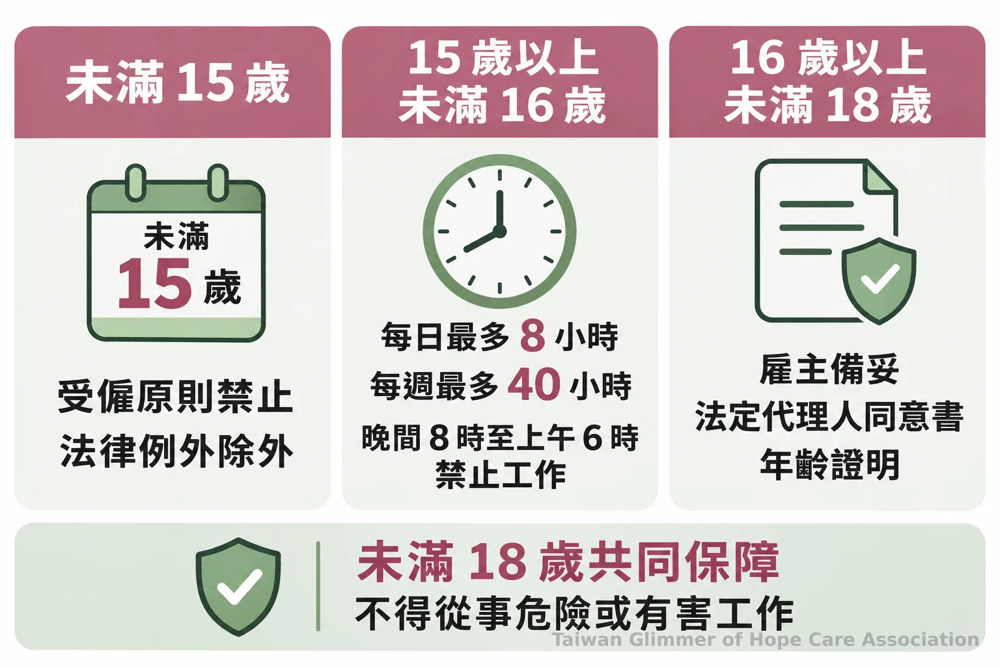
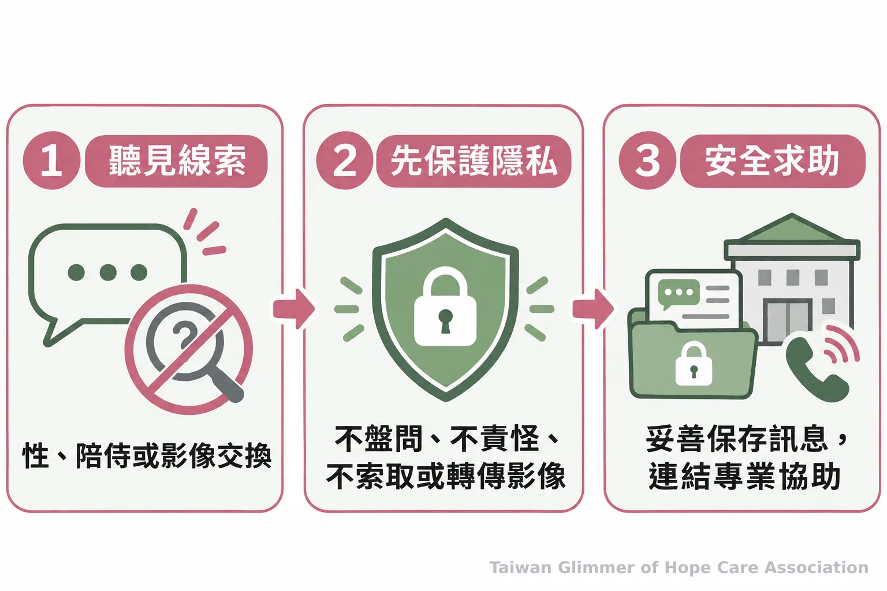

少年離家或中輟後，如何辨認工作與剝削風險？
離家、中輟或打工都不等於遭剝削。認識未成年人工作規定、兒少性剝削的法律界線，以及家長、教師和志工可陪少年採取的求助步驟。
【微光專欄｜看見不同年紀的孩子｜系列一之 5】
離家、中輟或打工不能單獨證明遭剝削。大人可先確認安全，再核對工作條件與金錢要求。
一、離家、中輟或打工，先看安全與支持是否中斷
離家、中輟和打工不能證明遭剝削；先確認安全，再了解工作與人際狀況。
先確認少年是否安全、能否聯絡親友，並核對工作地點、職務、薪資與工時。若有人要求保密、索取金融卡或密碼，或要他代收款、領物，勿交付或代辦，保存訊息並找可信任的大人核實。單一警訊不能代替法律判斷。
少年可能擔心求助後失去收入或住處，也未必自認遭剝削。質性統合研究指出，支持服務應讓青少年參與決定協助方式，但不能據此推估台灣比例。大人可說明選項並陪同核實。

二、未成年人打工，年齡不同、適用規定也不同
先確認年齡、工作內容與工時；未滿十八歲受僱有特別保護，未滿十五歲原則上不得受僱。
《勞動基準法》第 45 條規定，未滿十五歲原則不得受僱；國中畢業者屬法定例外。尚未國中畢業者，須經主管機關認定工作性質及環境無礙身心健康並許可，才可受僱。十五歲以上未滿十六歲屬童工，每日最多工作八小時、每週四十小時，晚間八時至翌日上午六時不得工作。未滿十八歲受僱，雇主須備妥法定代理人同意書與年齡證明，也不得從事危險或有害工作。
可陪少年記下職務、地點、報酬、工時與聯絡窗口，保留招募訊息及班表。若工作與約定不符或疑似違法，可向地方勞工主管機關詢問或申訴。

三、性剝削的法律範圍與求助方式
法律涵蓋有對價的性行為、特定性影像及色情陪侍等；遇疑慮應保護少年安全與隱私。
《兒童及少年性剝削防制條例》第 2 條將遭受或疑似遭受性剝削的兒少列為被害人。離家、中輟或打工本身不能判定性剝削；若少年提及以報酬、住宿或工作交換性行為、陪侍或影像，交由主管機關及司法專業處理，不要盤問或責怪。勿下載、索取、轉傳性影像，也勿公開少年身分；《兒童及少年福利與權益保障法》第 69 條有相關保護規定。
「本條例所稱被害人，指遭受性剝削或疑似遭受性剝削之兒童或少年。」—《兒童及少年性剝削防制條例》第 2 條
網路招募或影像威脅，可參考兒少性剝削的預防與求助方式。

四、藝術陪伴提供一個可以表達的空間
微光從藝術家作品和情緒主題設計課程，讓孩子自由創作與分享，不以畫作判斷遭遇，也不把藝術陪伴稱為治療。
微光與瑞芳愛鄰、板橋明穗及中壢宣愛合作開課。育妏老師帶領瑞芳與中壢課程，姚老師帶領板橋課程。課程從藝術家作品引出情緒主題，孩子可自由表達，沒有標準答案，也不比較畫得好不好。
畫作不能診斷或判定受虐，藝術陪伴不能取代專業處理；出現安全疑慮應連結正式求助管道。
五、微光怎麼做：在地據點的藝術陪伴
微光與三個在地據點合作，每月各開一堂藝術陪伴課，從藝術家作品帶出情緒主題。
微光在板橋明穗、瑞芳愛鄰與中壢宣愛據點開課，每個據點每月一堂藝術陪伴課。課程從藝術家作品帶出情緒主題，沒有標準答案，也不比較作品好壞。夏卡爾主題課以「夢想花園」和「壓力怪獸」為題，孩子可把壓力畫成烏雲、怪獸或旋風，再跟它說說話。藝術陪伴提供創作與表達的空間，畫作不作為診斷或判定受虐的依據。照片與紀錄，請見〈瑞芳愛鄰據點：跟著夏卡爾，飛進我的夢想花園〉。
六、發現風險時，大人可以陪少年走哪一步？
兒少保護疑慮撥 113；有人身立即危險先撥 110。
衛生福利部的 113 保護專線全年無休、二十四小時受理通報與諮詢。確認少年安全、保存相關紀錄後，可陪同聯絡學校、地方勞工主管機關或社政單位；若安全受威脅，不要承諾保密到底。
- 確認安全，必要時離開危險地點。
- 保存招募、排班及金錢往來資料，不轉傳性影像。
- 陪同聯絡學校、地方勞工或社政單位；兒少保護疑慮撥 113，立即危險撥 110。
- 離家、中輟、打工不能直接當成遭剝削的證明。
- 核對勞動規定，疑似受害時保護身分並連結正式管道。
常見問題
先確認安全，再陪少年核對工作資訊或聯絡正式管道。
Q1：離家或中輟就代表遭剝削嗎？
不能只憑離家或中輟判定，先了解安全與工作。
Q2：未滿十五歲可以受僱嗎？
原則不得受僱，例外須符合法定條件。
Q3：有人要求交金融卡或代收款項怎麼辦？
不要交卡片、密碼或代辦款項，保存訊息並求助。
Q4：疑似性剝削可以打 113 嗎？
可以；若有立即人身危險，先撥 110。
Q5：少年不願求助，大人可以怎麼做？
可找學校、勞工或社政單位；立即危險撥 110。
參考文獻
- 全國法規資料庫（2024）。《勞動基準法》第 44 至 48 條。https://law.moj.gov.tw/LawClass/LawAll.aspx?PCode=N0030001
- 勞動部（2024）。僱用未滿18歲勞工須留意勞動基準法特別規定以免觸法。https://www.mol.gov.tw/1607/1632/1640/70371/
- 全國法規資料庫（2024）。《兒童及少年性剝削防制條例》第 2 條。https://law.moj.gov.tw/LawClass/LawAll.aspx?pcode=D0050023
- 全國法規資料庫（2021）。《兒童及少年福利與權益保障法》第 69 條。https://law.moj.gov.tw/LawClass/LawAll.aspx?pcode=D0050001
- 衛生福利部（2017，更新於 2026 年 10 月 28 日）。113 保護專線介紹。https://dep.mohw.gov.tw/DOPS/fp-1183-6499-105.html
- Prior A, et al. (2023). Help-Seeking and Help-Related Experiences of Commercially Sexually Exploited Youth: A Qualitative Meta-Synthesis. Trauma, Violence, & Abuse, 24(3), 1693–1711. https://pubmed.ncbi.nlm.nih.gov/35379052/
本文同步刊於 appi.news。